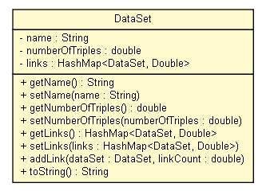

tud.iir.web.datasetcrawler
Class DataSet

java.lang.Object
 tud.iir.web.datasetcrawler.DataSet
tud.iir.web.datasetcrawler.DataSet
class DataSet
- extends java.lang.Object
|
Constructor Summary |
DataSet(java.lang.String name,
double numberOfTriples)
|
| Methods inherited from class java.lang.Object |
clone, equals, finalize, getClass, hashCode, notify, notifyAll, wait, wait, wait |
name
private java.lang.String name
numberOfTriples
private double numberOfTriples
links
private java.util.HashMap<DataSet,java.lang.Double> links
DataSet
public DataSet(java.lang.String name,
double numberOfTriples)
getName
public java.lang.String getName()
setName
public void setName(java.lang.String name)
getNumberOfTriples
public double getNumberOfTriples()
setNumberOfTriples
public void setNumberOfTriples(double numberOfTriples)
getLinks
public java.util.HashMap<DataSet,java.lang.Double> getLinks()
setLinks
public void setLinks(java.util.HashMap<DataSet,java.lang.Double> links)
addLink
public void addLink(DataSet dataSet,
double linkCount)
toString
public java.lang.String toString()
- Overrides:
toString in class java.lang.Object